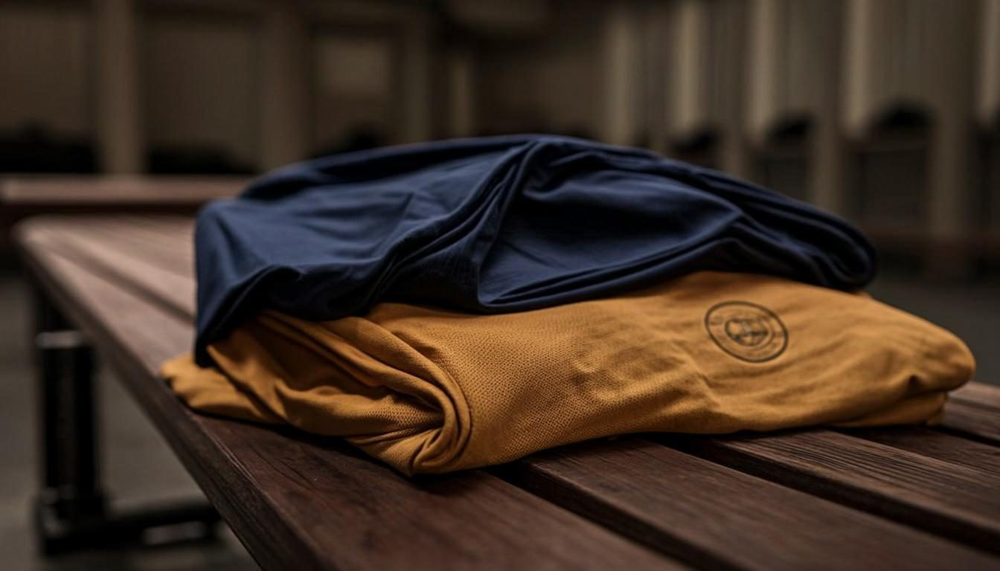

"If Sporting Pearls is still thriving 100 years from now, what decisions should we make today?"
One question guides every major institutional decision — examined through five lenses.
Mission
Why Sporting Pearls exists.
People
Who develops and protects the mission.
Systems
How the institution operates consistently.
Assets
What resources and knowledge must be preserved.
Culture
What values must survive generations.
Relevant. Trusted. Transforming lives.
A community institution that remains relevant, trusted and capable of transforming young lives — a century from now.
People
Football, character, confidence and life skills.
Community
Rooted in and accountable to the community.
Excellence
Continual improvement in coaching and governance.
Sustainability
Diversified and responsible resources.
Legacy
Values, knowledge and institutional memory survive generations.
Every system, one mission.
Every major system should reinforce the same mission.
Football Development
Player pathways · Coaching · Technical standards
Safeguarding
Child protection · Welfare · Safe participation
Education & Life Skills
Academic support · Character · Personal development
Governance
Leadership · Accountability · Policies
Finance
Budgeting · Controls · Sustainability
People & HR
Recruitment · Development · Volunteer systems
Facilities & Assets
Fields · Equipment · Infrastructure
Partnerships
Sponsors · Development partners · Football networks
Digital & Communications
Website · Records · Media · Data
Community Impact
Football as a platform for positive local impact
Leadership protects the mission.
Leadership protects the mission while technical and operational teams deliver it.
A system, not a person.
Safeguarding is an institutional system, not a single person's responsibility.
Policy
Child safeguarding & protection framework.
People
Safe recruitment, codes of conduct, training.
Practice
Safe coaching, travel, events & digital communication.
Reporting
Clear channels for concerns and incidents.
Records
Confidential documentation and follow-up.
Review
Regular risk assessment and policy review.
Never one single source.
Reduce dependence on any single source of income — six streams, balanced over time.
Target balance — no single source should ever dominate the institution.
People carry it forward.
A 100-year institution must continuously develop the people who carry it forward.
Young Players
Discover · Develop · Lead
Young Leaders
Mentor · Volunteer · Learn
Coaches
Licence · Develop · Specialise
Administrators
Manage · Govern · Improve
Senior Leaders
Mentor · Steward · Succession-plan

What is not documented can disappear.
Six archives preserve what people leave behind.
Governance
Minutes · Policies · Resolutions · Strategic plans
Finance
Budgets · Reports · Assets · Funding records
Football
Curricula · Session plans · Player pathways
Safeguarding
Policies · Training · Risk assessments
History
Photos · Stories · Milestones · Achievements
Partnerships
Agreements · Reports · Institutional relationships
Five eras. One institution.
The first five years create the foundation; later generations build on it.
Build the base
Governance · Safeguarding · Coaching · Digital · Finance
Strengthen systems
Facilities · Partnerships · Leadership pipeline
Widen the impact
Stronger programmes · Wider community impact
Endure & renew
Resilience · Intergenerational leadership
Serve the future
Trusted institution serving future generations
A measurable foundation.
Six stamps of a functioning institution.
Strong Programmes
Clear player pathways across all programmes.
Qualified People
Continuous professional development.
Safe Environment
Safeguarding embedded in daily practice.
Good Governance
Policies, records and accountability functioning.
Healthier Finances
Diversified revenue and controls.
Trusted Partnerships
Long-term relationships built on shared impact.

Build something that can outlive us.
Not just a football academy — a safe, accountable, community-rooted institution that continues developing young people for generations.
Developing Talent · Building Character · Transforming Lives Through Football